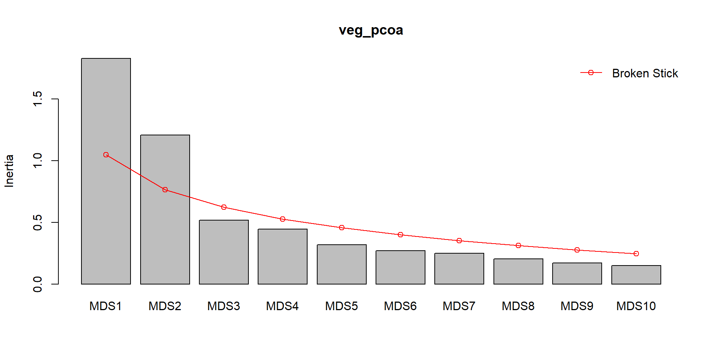
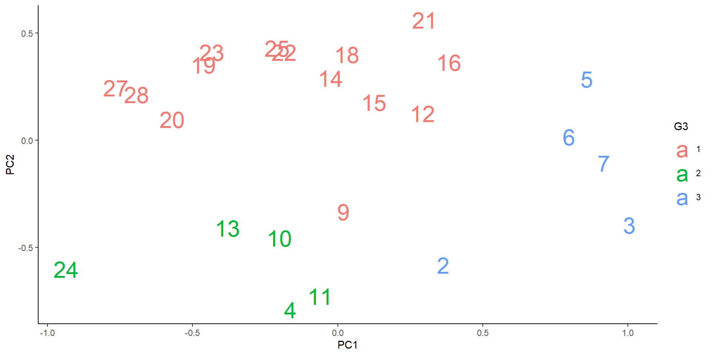

Statistics with R - session 3 - Multivariate analysis
Cirad - UnB
2025-06-10
Why multivariate analyses ?
Multivariate analysis are used to study the joint distribution of several variables, i.e. the variation of each variable and their correlations.
Clustering methods aim to group observations based on similarities across multiple variables.
Ordination methods aim to rearrange the observations in a lower-dimensional space to reduce the dimensionality of the data while preserving the main patterns of variation.
Why multivariate analyses ?
Ordination methods can be used for:
the identification axes of co-variation between several variables (eg: co-variation between climatic variables or soil variables along environmental gradients, co-variation of functional traits along specta of functional strategies…)
the study of ecological communities by jointly considering the occurrence or abundance of multiple species
Structure of multivariate data
n observations (in row) of p variables (in column), where \(x_{ij}\) is the value of the variable j for observation i:
\[\begin{bmatrix} x_{11} & x_{12} & \cdots & x_{1p} \\ x_{21} & x_{22} & \cdots & x_{2p} \\ \vdots & \vdots & \ddots & \vdots \\ x_{n1} & x_{n2} & \cdots & x_{np} \end{bmatrix}\]Example:
values of p environmental variables in n sites (observations)
floristic composition (p species = variables) in n sites
values of p functional traits (variables) for n species (observations)
Package vegan
There are many packages to do multivariate analyses: stats (base package), ade4, FactoMine, vegan.
We will mostly work with vegan, let’s load it:
Loading required package: permuteLoading required package: latticeThis is vegan 2.6-8Let’s work with data on understory vegetation in Fennoscandia
These data are available in the package vegan and include:
- A floristic table of cover of understory vegetation (species in colum and sites in row):
For more information on these data see Väre,Ohtonen and Oksanen (1995)
Unconstrained ordination methods
Principle
Unconstrained ordination methods are used to visualise and explore the relationships among variables or observations without imposing any specific constraints on the relationships.
The objective is to identify a few axes that capture most of the variation in a multidimensional dataset, allowing for a simplified yet informative representation.
This allows to visualise similarities among observations, as more similar observations will be closer in the reduced-dimensional spaces.
PCA - Principle
In a cloud of observations in a p-dimension space (p variables), a Principal Components Analysis fits:
a first line minimising the Euclidean distance between the line and the observations, hence maximising the variance captured.
a second line, orthogonal to the first one, capturing the maximum remaining variance.
a third, a fourth, …. until we have \(p\) lines
Source: E. Marcon
Each of these lines is a Principal Component (PC) and is associated with an eigenvalue indicating how much variance it explains.
PCA - Principle
Alternative representation:
Source: G. Simpson
PCA - Running a PCA
Let’s fit a PCA on the soil data, using the function pca:
⚠️ As the PCA is based on Euclidean distances, the variables needs to be express in comparable units. For this, we need to standardise them to a mean of 0 and a standard deviation of 1, using the argument scale = TRUE
PCA - Output
Call:
pca(X = varechem, scale = TRUE)
Partitioning of correlations:
Inertia Proportion
Total 14 1
Unconstrained 14 1
Eigenvalues, and their contribution to the correlations
Importance of components:
PC1 PC2 PC3 PC4 PC5 PC6 PC7
Eigenvalue 5.1916 3.1928 1.6855 1.06899 0.81599 0.70581 0.43641
Proportion Explained 0.3708 0.2281 0.1204 0.07636 0.05829 0.05042 0.03117
Cumulative Proportion 0.3708 0.5989 0.7193 0.79564 0.85392 0.90434 0.93551
PC8 PC9 PC10 PC11 PC12 PC13 PC14
Eigenvalue 0.36884 0.1707 0.14953 0.08526 0.06986 0.035057 0.023615
Proportion Explained 0.02635 0.0122 0.01068 0.00609 0.00499 0.002504 0.001687
Cumulative Proportion 0.96185 0.9740 0.98473 0.99082 0.99581 0.998313 1.000000The inertia is the total variance (all of it is unconstrained).
The eigenvalues are the variance explained by each PC.
We also get the proportion of variance explained by each PC, an the cumulative proportion.
PCA - Importance of components
As the objective is to reduce the dimensionality of our data, we will only interpret a small number of PCs.
The screeplot shows the variance explained by each PC.
The broken stick distribution shows the expected distribution of the variance if it was randomly distributed among PCs.
Here we can focus on the two first PCs.
PCA - Visualisation
A biplot shows the observations and variables in a same 2d-space defined by the chosen PCs:
PCA - Visualisation
PCA - Visualisation
The angles between variables reflect their correlations.
Variables at 180° are negatively correlated.
Variables at 0° are positively correlated.
Variables at 90° are not correlated.
üí° In vegan, type scaling can be obtained by scaling = ‚Äúspecies‚Äù.
PCA - Visualisation
To represent different PCs, we can specify them using the argument choice:
CA - Principle
As PCA is based on Euclidean distances, it assumes linear relationships between variables, and between variables and underlying gradients.
When analysing floristic composition along ecological gradients (with species as variables), this assumption is often violated, as many species exhibit unimodal distributions along gradients.
For this type of data, we can use a Correspondence Analysis (CA), based on \(\chi^2\) distances, which are better suited for detecting unimodal responses.
In addition, CA is not affected by double zeros: sites with a lot of shared absences are not interpreted as being more similar.
CA - Running a CA
We can run a CA on a floristic table, i.e. a contingency table presenting the presence/absence or the abundance of p species in n sites.
Callvulg Empenigr Rhodtome Vaccmyrt Vaccviti
18 0.55 11.13 0.00 0.00 17.80
15 0.67 0.17 0.00 0.35 12.13
24 0.10 1.55 0.00 0.00 13.47
27 0.00 15.13 2.42 5.92 15.97
23 0.00 12.68 0.00 0.00 23.73CA - Output
Call:
ca(X = varespec)
Partitioning of scaled Chi-square:
Inertia Proportion
Total 2.083 1
Unconstrained 2.083 1
Eigenvalues, and their contribution to the scaled Chi-square
Importance of components:
CA1 CA2 CA3 CA4 CA5 CA6 CA7
Eigenvalue 0.5249 0.3568 0.2344 0.19546 0.17762 0.12156 0.11549
Proportion Explained 0.2520 0.1713 0.1125 0.09383 0.08526 0.05835 0.05544
Cumulative Proportion 0.2520 0.4233 0.5358 0.62962 0.71489 0.77324 0.82868
CA8 CA9 CA10 CA11 CA12 CA13 CA14
Eigenvalue 0.08894 0.07318 0.05752 0.04434 0.02546 0.01710 0.014896
Proportion Explained 0.04269 0.03513 0.02761 0.02129 0.01222 0.00821 0.007151
Cumulative Proportion 0.87137 0.90650 0.93411 0.95539 0.96762 0.97583 0.982978
CA15 CA16 CA17 CA18 CA19 CA20
Eigenvalue 0.010160 0.007830 0.006032 0.004008 0.002865 0.0019275
Proportion Explained 0.004877 0.003759 0.002896 0.001924 0.001375 0.0009253
Cumulative Proportion 0.987855 0.991614 0.994510 0.996434 0.997809 0.9987341
CA21 CA22 CA23
Eigenvalue 0.0018074 0.0005864 0.0002434
Proportion Explained 0.0008676 0.0002815 0.0001168
Cumulative Proportion 0.9996017 0.9998832 1.0000000The output of a CA is very similar to a PCA.
We get the eigenvalues explained by each Correspondence Axis (CA).
CA - Importance of components
As with a PCA, we can look at the variance explained by each CA:
CA - Visualisation
In CA biplots, species are shown as points representing the optima of the species along the gradients. Abundance of species declines in concentric circles away from the optima.
üí° To visualise a CA, we use the function plot. The use of scaling is similar to a PCA.
CA - Visualisation
We can focus on the species…
The proximity of species indicate that they are presents in similar sites.
PCoA - Principle
The Principal Coordinate Analysis (PCoA), also called metric multidimentional scaling (MDS), is a more general method.
PCoA can use many types of distance (not only Euclidean or \(\chi^2\)):
for abundance data, we often used the distance of Bray-Curtis.
for presence/absence data, we often use the distance of Jaccard (i.e. 1 - Jaccard Index).
These distances range from 0 (identical species composition) to 1 (no shared species). They focus on shared abundance and thus ignore the double absences.
üí° A PCoA with Euclidian distance is equivalent to a PCA, and with \(\chi^2\) distance to a CA.
PCoA - Running a PCoA
Let’s do a PCoA on abundance data using Bray-Curtis distance.
We first need to calculate the distance between sites, using vegdist:
18 15 24 27 23 19 22
15 0.5310021
24 0.6680661 0.3597783
27 0.5621247 0.4055610 0.4934947
23 0.3747078 0.3652097 0.5020306 0.4286111
19 0.5094738 0.4560757 0.5092318 0.4878190 0.3606242
22 0.6234419 0.3579517 0.5010050 0.4655224 0.4812706 0.4726483
16 0.5337610 0.3976674 0.5907623 0.5683930 0.4094312 0.4496731 0.2678031
28 0.8418209 0.5225414 0.5736665 0.3027802 0.6979519 0.6431734 0.5985666
13 0.3453347 0.6063846 0.7576747 0.7543736 0.6221471 0.5739244 0.6948736
14 0.5449810 0.4803756 0.6533606 0.7467915 0.5645808 0.6331942 0.5357609
20 0.3879069 0.3784188 0.4346892 0.4957833 0.2877014 0.3953776 0.4627020
25 0.6318891 0.3376115 0.3369098 0.5001593 0.4258617 0.4311299 0.3822981
7 0.3603697 0.6717391 0.7931069 0.7792917 0.6390838 0.6958570 0.7459886
5 0.4955699 0.7178612 0.8561753 0.8732190 0.7295255 0.7898205 0.8611451
6 0.3382309 0.6355122 0.7441373 0.7496935 0.6252483 0.5684030 0.7249162
3 0.5277480 0.7578503 0.8382119 0.8090236 0.7128798 0.5302756 0.8026152
4 0.4694018 0.6843974 0.8309875 0.8413800 0.7117919 0.5177604 0.8015314
2 0.5724092 0.8206269 0.8372551 0.7581924 0.7249869 0.5389222 0.8321464
9 0.6583569 0.7761039 0.7590517 0.7415898 0.6693889 0.5393143 0.7725082
12 0.4688038 0.6794199 0.6894538 0.6253616 0.5384762 0.4288556 0.7051751
10 0.6248996 0.7644564 0.7842829 0.7096540 0.6625476 0.5059910 0.7875328
11 0.4458523 0.4716274 0.5677373 0.6322919 0.4710280 0.3293493 0.5812219
21 0.5560864 0.7607281 0.7272727 0.5456001 0.4951221 0.5315894 0.6771167
16 28 13 14 20 25 7
15
24
27
23
19
22
16
28 0.7015360
13 0.5514941 0.8600122
14 0.4826350 0.8239667 0.5547565
20 0.3737797 0.6963560 0.5785542 0.5115258
25 0.4306058 0.6086150 0.7412605 0.5541517 0.4518556
7 0.6596144 0.8960202 0.4533054 0.6550830 0.5959162 0.7556726
5 0.7184789 0.9539592 0.5148988 0.7257681 0.7153827 0.8600858 0.3237446
6 0.6509879 0.9014440 0.3515673 0.6227473 0.5439118 0.7343872 0.1754713
3 0.6837953 0.9234485 0.4965478 0.7836661 0.6690479 0.8168684 0.5154487
4 0.6462648 0.9381169 0.3881748 0.6734743 0.6771854 0.8400134 0.5601721
2 0.7354202 0.9053213 0.5968691 0.8592489 0.6951539 0.8179089 0.6465777
9 0.8185866 0.8686670 0.7292530 0.8282497 0.6982486 0.7884243 0.8318435
12 0.6342166 0.8543167 0.5902386 0.7507074 0.5182426 0.7062564 0.6991666
10 0.7656598 0.9016604 0.7160439 0.8304088 0.6706349 0.7845955 0.7697453
11 0.5172825 0.7544064 0.4272808 0.6743277 0.4461712 0.6175930 0.5262233
21 0.7474559 0.7248773 0.7212772 0.8096450 0.6320431 0.7466232 0.7933350
5 6 3 4 2 9 12
15
24
27
23
19
22
16
28
13
14
20
25
7
5
6 0.3984538
3 0.5634432 0.4517627
4 0.5377506 0.4665100 0.3592689
2 0.7257597 0.5552754 0.2099203 0.4841145
9 0.9014583 0.7223126 0.3885811 0.6222340 0.2330286
12 0.7808641 0.5762462 0.2641851 0.4870742 0.1846147 0.2277228
10 0.8504191 0.6567926 0.3413378 0.5776062 0.1456729 0.1117280 0.1793368
11 0.5563798 0.4077948 0.3002597 0.3215966 0.4209596 0.5145260 0.3688102
21 0.8888316 0.6720141 0.7507773 0.7641304 0.6779661 0.5952563 0.5602137
10 11
15
24
27
23
19
22
16
28
13
14
20
25
7
5
6
3
4
2
9
12
10
11 0.5043578
21 0.6147874 0.6713363PCoA - Running a PCoA
We use pco to run a PCoA.
When using Bray-Curtis distance, we can get negative eigenvalues (corresponding to distances in an imaginary space). To avoid this, we can do a Lingoes correction.
PCoA - Output
Warning in summ$call <- object$call: Coercing LHS to a list
Call:
pco(X = veg_dist, add = "lingoes")
Partitioning of Lingoes adjusted squared Bray distance:
Inertia Proportion
Total 6.25 1
Unconstrained 6.25 1
Eigenvalues, and their contribution to the Lingoes adjusted squared Bray distance
Importance of components:
MDS1 MDS2 MDS3 MDS4 MDS5 MDS6 MDS7
Eigenvalue 1.8294 1.2076 0.51704 0.44394 0.31949 0.27023 0.24925
Proportion Explained 0.2927 0.1932 0.08273 0.07104 0.05112 0.04324 0.03988
Cumulative Proportion 0.2927 0.4859 0.56867 0.63971 0.69083 0.73407 0.77395
MDS8 MDS9 MDS10 MDS11 MDS12 MDS13 MDS14
Eigenvalue 0.20259 0.17130 0.15010 0.13786 0.1325 0.11363 0.09141
Proportion Explained 0.03242 0.02741 0.02402 0.02206 0.0212 0.01818 0.01463
Cumulative Proportion 0.80636 0.83377 0.85779 0.87985 0.9010 0.91923 0.93385
MDS15 MDS16 MDS17 MDS18 MDS19 MDS20
Eigenvalue 0.07924 0.07373 0.06767 0.060824 0.04874 0.036629
Proportion Explained 0.01268 0.01180 0.01083 0.009732 0.00780 0.005861
Cumulative Proportion 0.94653 0.95833 0.96916 0.978890 0.98669 0.992551
MDS21 MDS22
Eigenvalue 0.026132 0.020424
Proportion Explained 0.004181 0.003268
Cumulative Proportion 0.996732 1.000000PCoA - Importance of components

PCoA - Visualisation
We plot the observations using plot and then add the species scores:
NMDS - Principle
Non-metric multidimentional scaling is an ordination method used in similar contexts as PCA, CA and PCoA, but working very differently:
as in PCoA, we can choose the measure of distance (usually Bray-Curtis)
the number of axes is set a priori (usually 2)
an iterative algorithm moves the sites until the distances between sites are the closest possible to the actual multivariate distances (based on the chosen distance metric).
NMDS is non-metric as it focussed on the rank order of distances rather than on the actual distance, making it very flexible and robust.
NMDS - Running a NMDS
We now work with the dune data, a floristic table of dune vegetation.
We run the NMDS using metaMDS. The default number of axes is 2.
As there is a random component in the analyse, I’ve set a seed so that we all get the same results.
NMDS - Output
Call:
metaMDS(comm = dune, distance = "bray", trace = FALSE)
global Multidimensional Scaling using monoMDS
Data: dune
Distance: bray
Dimensions: 2
Stress: 0.1183186
Stress type 1, weak ties
Best solution was repeated 5 times in 20 tries
The best solution was from try 7 (random start)
Scaling: centring, PC rotation, halfchange scaling
Species: expanded scores based on 'dune' The output gives:
a reminder of the data, the distance metric, the number of dimensions
the stress: a value < 0.1 is good, a value < 0.2 is acceptable, a value > 0.2 is poor
the number of times the algorithm converged (number of best solutions). If less than 2 convergence, the result is unstable.
NMDS - Convergence issue
If the algorithm does not converge, we can:
- add iterations from previous best solution:
Call:
metaMDS(comm = dune, trace = FALSE, previous.best = dune_nmds)
global Multidimensional Scaling using monoMDS
Data: dune
Distance: bray
Dimensions: 2
Stress: 0.1183186
Stress type 1, weak ties
Best solution was repeated 3 times in 40 tries
The best solution was from try 36 (random start)
Scaling: centring, PC rotation, halfchange scaling
Species: expanded scores based on 'dune' NMDS - Visualisation
NMDS - Goodness of fit
To assess the goodness of fit, we can plot a Shepard plot with stressplot:
The Shepard plot shows ordination distance vs observed dissimilarity.
It also gives the R2, for non-metric fit \[R^2 = 1 - Stress^2\]
The smaller the stress, the better the fit.
The higher the R2, the better the fit.
NMDS - Number of dimensions
To see how the stress decreases when we add dimensions, we can fit a NMDS with number of dimensions ranging from 1 to 10 (or more), and plot the stress vs the number of dimensions:
k_vec <- 1:10 # number of dimensions
stress <- numeric(length(k_vec)) # create a vector of numeric
veg_dij <- metaMDSdist(dune, trace = FALSE) # calculate dissimilarities
set.seed(25)
for(i in seq_along(k_vec)) { # run an NMDS for 1 to 10 dimensions
sol <- metaMDSiter(veg_dij, k = i, # run the NMDS
trace = FALSE)
stress[i] <- sol$stress # extract the stress
}
Summary on unconstrained ordination methods
| Method | Principle | Use |
|---|---|---|
| PCA | Linear method based on Euclidian distance | Environmental data (or species data on short gradients) |
| CA | Unimodal method based on chi2 distance | Species data with non linear responses. chi2 give more weight to rare species than Bray-Curtis |
| PCoA | Metric based on several types of distances | Any kind of data. Bray-Curtis more sensitive to abundant species |
| NMDS | Based on rank, with several types of distances | Very flexible and robust for non-linear responses, many zeros… |
Clustering
Principle
Hierachical clustering aims to create groups of observations that are similar across a set of variables.
Observations are progressively aggregated based on their similarity until all are merged into a single group.
The clustering results in a tree-like structure called dendrogram, which illustrates the proximity between observations.
Performing the clustering
Let’s do a clustering of the plots based on the soil data.
- As for the PCA, we first need to standardise the variables:
- We then compute the distance matrix:
- We then perform the clustering using hclust. Here we use the method of Ward:
Different methods of clustering
Different methods of clustering can be used.
Ward clustering minimise intra-group variance
single linkage: connects clusters based on the shortest distance between any two points within those clusters
complete linkage: connects clusters based on the longest distance between any two points within those clusters
average linkage: connects clusters based on the average distance between all pairs of points within those clusters
The best methods depends on the data, but the Ward method is often a good choice.
Dendrogram
Horizontal lines represent grouping.
The length of vertical lines correspond to the distance between groupings.
Here there is not obvious choice for the number of groups… We can possibly make 3 or 5 groups.
Extract the groups
We can extract the groups using cutree:
18 15 24 27 23 19 22 16 28 13 14 20 25 7 5 6 3 4 2 9 12 10 11 21
1 1 2 3 3 3 3 1 3 2 1 3 3 4 4 4 4 2 4 1 1 5 5 1 Compare groups with PCA
We can also represent the groups on the PCA biplot:
Compare groups with PCA

üí° Note how we retrieve the scores of the ordination to be able to use ggplot to customise the plot.
Constrained ordination methods
Principle
In constrained ordination methods, the choice of the axes is based on the response to explanatory variables. These methods combine the concepts of ordination and regression.
The objective of constrained ordinations is to identify relationships between a multivariate response table and a multivariate explanatory table.
Constrained ordination can be used to identify relationships between the species composition of communities (here Y) and environmental variables (here X).
Collinearity
As in multiple linear regression, we need to avoid collinearity of explanatory variables.
In a real study, we will choose the variables to include based on our hypotheses.
RDA - Principle
Redundancy analysis (RDA) is the constrained equivalent of Principal Component Analysis (PCA).
It is therefore based on Euclidean distance and assumes linear relationships between species and environmental variables.
RDA - Hellinger transformation
To do a RDA (or a PCA) on a table of abundance of species, a Hellinger transformation is required. Hellinger distance has a more linear response to changes in species abundance.
We can do this transformation using decostand:
RDA - Running a RDA
We run the RDA with rda:
The formula is quite similar to the formula of a regression, but here the response variable is the abundance table (after Hellinger transformation).
We use the soil explanatory variables that we already standardised.
RDA - Output
Call:
rda(formula = spec_hel ~ pH + N + Mo + P, data = soil_norm)
Partitioning of variance:
Inertia Proportion
Total 0.3647 1.0000
Constrained 0.1190 0.3262
Unconstrained 0.2457 0.6738
Eigenvalues, and their contribution to the variance
Importance of components:
RDA1 RDA2 RDA3 RDA4 PC1 PC2 PC3
Eigenvalue 0.06963 0.03131 0.01048 0.007551 0.0919 0.04617 0.0260
Proportion Explained 0.19095 0.08585 0.02874 0.020707 0.2520 0.12661 0.0713
Cumulative Proportion 0.19095 0.27680 0.30554 0.326246 0.5782 0.70485 0.7762
PC4 PC5 PC6 PC7 PC8 PC9
Eigenvalue 0.01782 0.01444 0.0101 0.009309 0.007841 0.006657
Proportion Explained 0.04886 0.03961 0.0277 0.025527 0.021503 0.018255
Cumulative Proportion 0.82501 0.86462 0.8923 0.917852 0.939355 0.957610
PC10 PC11 PC12 PC13 PC14 PC15
Eigenvalue 0.005373 0.003198 0.001731 0.001587 0.0008924 0.0008017
Proportion Explained 0.014735 0.008770 0.004746 0.004353 0.0024471 0.0021985
Cumulative Proportion 0.972345 0.981115 0.985861 0.990214 0.9926608 0.9948593
PC16 PC17 PC18 PC19
Eigenvalue 0.0005982 0.0005343 0.0004444 0.0002977
Proportion Explained 0.0016404 0.0014652 0.0012187 0.0008164
Cumulative Proportion 0.9964997 0.9979649 0.9991836 1.0000000
Accumulated constrained eigenvalues
Importance of components:
RDA1 RDA2 RDA3 RDA4
Eigenvalue 0.06963 0.03131 0.01048 0.007551
Proportion Explained 0.58529 0.26315 0.08809 0.063469
Cumulative Proportion 0.58529 0.84844 0.93653 1.000000The output includes:
The inertia (i.e. total variance) partitioned into a part explained by the constrained axes, and a residual part (unconstrained).
The first axes (RDA1, RDA2, …) are the constrained axes, representing the variation explained by the explanatory variables.
The remaining axes (PC1, PC2, …) are unconstrained and represent the residual variation not explained by the explanatory variables.
RDA - Goodness of fit
$r.squared
[1] 0.3262456
$adj.r.squared
[1] 0.1844026\(R^2\) is the percentage of variance explained by the constrained part (as shown in the output)
\(R^2\) adjusted is corrected to take into account the number of explanatory variables
RDA - VIF
As for a linear regression, we can use the VIF (variance inflation factor) obtained with vif.cca, to check that there is not too much collinearity (too much if > 10):
pH N Mo P
1.034667 1.070768 1.062915 1.096808 RDA - Significance testing
The significance of the RDA is obtained with anova.cca.
Significance of the whole model:
Permutation test for rda under reduced model
Permutation: free
Number of permutations: 999
Model: rda(formula = spec_hel ~ pH + N + Mo + P, data = soil_norm)
Df Variance F Pr(>F)
Model 4 0.11897 2.3 0.004 **
Residual 19 0.24570
---
Signif. codes: 0 '***' 0.001 '**' 0.01 '*' 0.05 '.' 0.1 ' ' 1Significance of each explanatory variable:
Permutation test for rda under reduced model
Terms added sequentially (first to last)
Permutation: free
Number of permutations: 999
Model: rda(formula = spec_hel ~ pH + N + Mo + P, data = soil_norm)
Df Variance F Pr(>F)
pH 1 0.041829 3.2346 0.007 **
N 1 0.023960 1.8528 0.102
Mo 1 0.018360 1.4198 0.202
P 1 0.034825 2.6930 0.029 *
Residual 19 0.245700
---
Signif. codes: 0 '***' 0.001 '**' 0.01 '*' 0.05 '.' 0.1 ' ' 1RDA - Visualisation
RDA is visuallised using a triplot (as it represents the sites, the species and the environmental variables).
CCA - Principle
Canonical Correspondence Analysis (CCA) is the constrained equivalent of Correspondence Analysis (CA).
It is therefore based on \(\chi^2\) distance and assumes unimodal relationships between species and environmental variables.
CCA - Running a CCA
We run the CCA with cca:
Call:
cca(formula = spec_hel ~ pH + N + Mo + P, data = soil_norm)
Partitioning of scaled Chi-square:
Inertia Proportion
Total 1.0785 1.0000
Constrained 0.2693 0.2497
Unconstrained 0.8091 0.7503
Eigenvalues, and their contribution to the scaled Chi-square
Importance of components:
CCA1 CCA2 CCA3 CCA4 CA1 CA2 CA3
Eigenvalue 0.1265 0.06809 0.04340 0.03132 0.1696 0.1589 0.09598
Proportion Explained 0.1173 0.06313 0.04024 0.02904 0.1573 0.1474 0.08899
Cumulative Proportion 0.1173 0.18046 0.22070 0.24974 0.4070 0.5544 0.64335
CA4 CA5 CA6 CA7 CA8 CA9 CA10
Eigenvalue 0.07226 0.06689 0.05607 0.04324 0.02831 0.02408 0.02256
Proportion Explained 0.06700 0.06202 0.05199 0.04009 0.02625 0.02233 0.02092
Cumulative Proportion 0.71035 0.77238 0.82436 0.86445 0.89071 0.91303 0.93395
CA11 CA12 CA13 CA14 CA15 CA16
Eigenvalue 0.01736 0.01156 0.01103 0.008615 0.006007 0.005498
Proportion Explained 0.01609 0.01072 0.01023 0.007988 0.005570 0.005098
Cumulative Proportion 0.95005 0.96077 0.97100 0.978985 0.984555 0.989653
CA17 CA18 CA19
Eigenvalue 0.004511 0.003574 0.003073
Proportion Explained 0.004183 0.003314 0.002850
Cumulative Proportion 0.993836 0.997150 1.000000
Accumulated constrained eigenvalues
Importance of components:
CCA1 CCA2 CCA3 CCA4
Eigenvalue 0.1265 0.06809 0.0434 0.03132
Proportion Explained 0.4698 0.25280 0.1611 0.11628
Cumulative Proportion 0.4698 0.72258 0.8837 1.00000CCA - Interpretation
The rest is similar to the RDA:
db-RDA - Principle
Distance-based Redundancy analysis (db-RDA) is the constrained equivalent of Principal Coordinate Analysis (PCoA).
It can therefore be used with a variety of distance measures (commonly Bray-Curtis)
db-RDA - Running db-RDA
We run the db-RDA with dbrda:
Call:
dbrda(formula = spec_hel ~ pH + N + Mo + P, data = soil_norm, distance = "bray")
Partitioning of squared Bray distance:
Inertia Proportion
Total 2.4141 1.000
Constrained 0.7461 0.309
Unconstrained 1.6680 0.691
Eigenvalues, and their contribution to the squared Bray distance
Importance of components:
dbRDA1 dbRDA2 dbRDA3 dbRDA4 MDS1 MDS2 MDS3
Eigenvalue 0.4372 0.19022 0.07914 0.03950 0.5152 0.3889 0.16885
Proportion Explained 0.1811 0.07879 0.03278 0.01636 0.2134 0.1611 0.06995
Cumulative Proportion 0.1811 0.25990 0.29269 0.30905 0.5225 0.6836 0.75352
MDS4 MDS5 MDS6 MDS7 MDS8 MDS9 MDS10
Eigenvalue 0.14887 0.11600 0.10271 0.08099 0.07761 0.04623 0.03680
Proportion Explained 0.06167 0.04805 0.04255 0.03355 0.03215 0.01915 0.01524
Cumulative Proportion 0.81519 0.86325 0.90579 0.93934 0.97149 0.99064 1.00589
MDS11 MDS12 MDS13 MDS14 MDS15 iMDS1
Eigenvalue 0.02591 0.015991 0.008064 0.005511 2.337e-04 -0.0023018
Proportion Explained 0.01073 0.006624 0.003340 0.002283 9.682e-05 -0.0009535
Cumulative Proportion 1.01662 1.023246 1.026586 1.028869 1.029e+00 1.0280122
iMDS2 iMDS3 iMDS4
Eigenvalue -0.013127 -0.02573 -0.02877
Proportion Explained -0.005438 -0.01066 -0.01192
Cumulative Proportion 1.022574 1.01192 1.00000
Accumulated constrained eigenvalues
Importance of components:
dbRDA1 dbRDA2 dbRDA3 dbRDA4
Eigenvalue 0.4372 0.1902 0.07914 0.03950
Proportion Explained 0.5860 0.2550 0.10608 0.05294
Cumulative Proportion 0.5860 0.8410 0.94706 1.00000db-RDA - Interpretation
The rest is similar to the RDA:
Acknowledgments
Resources
Resources to go further
Package ggvegan to make ggplot style graph from ordination results (not on CRAN)